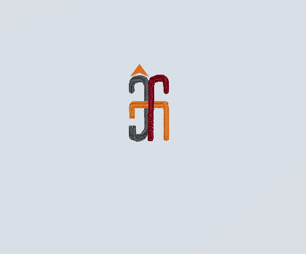

Hari ini hujan turun sangat deras, awan begitu kelabu menggambarkan isi hati sang raja yang merindukan permaisuri yang tak kunjung datang. Sementara itu Raisa , sang gadis desa yang kini dikurung oleh ibu tirinya di dalam gudang tengah melamun dibalik jendela biru yang kusam itu. Raisa berharap ada yang datang menolongnya dan membawanya pergi dari ruang lembab tak berudara itu.
Ketika berpuasa tentu kita sangat butuh asupan vitamin dan mineral. Asupan vitamin bisa kita peroleh dari mengkonsumsi buah-buahan. Berikut ini merupakan daftar kandugan vitaminyang terdapat pada buah-buahan yang wajib kita konsumsi agara daya tahan tubuh kita tetep vit.
| Buah-buahan | Kandungan Vitamin |
|---|---|
| Apel | A, C, E, K |
| Jeruk | C, B1, B9 |
| Mangga | C |
| Jambu | A, C, B1 |
Berikut ini adalah logo yang kami gunakan dalam produk JFMSlime
